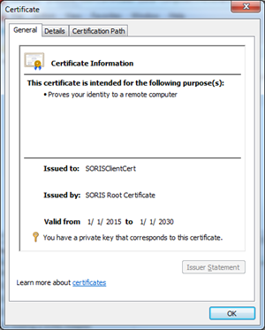
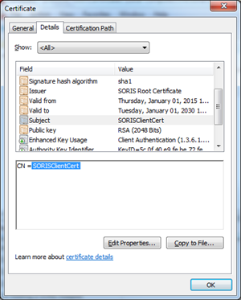
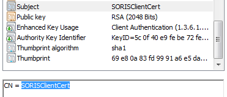
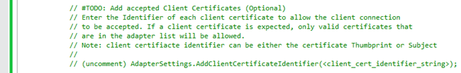

Configure a C# Adapter to Accept Client Certificates
To configure a C# Adapter to accept client certificates, complete the following procedures:
Create a Self-Signed Client Certificate
- Run the following command to create the Self-Signed Client Certificate:
NOTE: This step requires you to have already created the SORIS Root Authority from Step 1 of Creating a Self-Signed Server Certificate.
makecert -ic SORISRootCert.cer -iv SORISRootCert.pvk -pe -sv SORISClientCert.pvk -a sha1 -n "CN=SORISClientCert" -len 2048 -b 01/01/2015 -e 01/01/2030 -sky exchange SORISClientCert.cer -eku 1.3.6.1.5.5.7.3.2
Then, enter a new password three times for the certificate. The password is needed for the next step. When asked for the Issuer Signature, type the password used when creating the SORIS Root Authority from Step 1 of the Creating a Self-Signed Server Certificate section. - Run the following command to create the PFX Key:
pvk2pfx -pvk SORISClientCert.pvk -spc SORISClientCert.cer -pfx SORISClientCert.pfx
Then, enter the password from Step 1 of this section.
Install the Certificate on the Client Computer
- You want to install the SORISRootCert.cer and the SORISClientCert.pfx files to the Microsoft Management Console.
- Desigo CC is running on the client computer.
- To install the client certificate and Root Authority on the client computer, follow the steps from the Installing the Server Certificate section, but instead of installing the SORISServerCert.pfx, install the SORISClientCert.pfx.
Install the Client Certificate on the Server Computer
- You want to install the client certificate public key on the server computer, which is running SORIS Adapter.
- To validate the client certificate, install the SORISClientCert.cer to the Microsoft Management Console in the Personal > Certificates folder.
Configure the SORIS Adapter to Accept the Client Certificate
Now that you have created the client certificate and installed it in the Microsoft Management Console, you need to configure the Adapter to accept only communication requests from clients that use the client certificate.
- To copy the client certificate Thumbprint or Subject, double-click the SORIS Client Certificate you installed in the Personal folder in the previous section.
- The Certificate window displays

- Click the Details tab, and then find and select Subject or Thumbprint in the Field column.
Note: Using the certificate’s Subject is recommended since the Thumbprint will change if a new client certificate is re-created due to expiration
- Copy the preferred client certificate identifier.
If you use the Subject, Copy the Subject Value; which is displayed after the “CN = “. If you are using the self-signed client certificate from the guide, use the Subject Value “SORISClientCert”.
If you use the Thumbprint, Copy and Paste the Thumbprint into a text editor and remove white spaces.
NOTE: depending on how the Thumbprint is copied, there may be a whitespace at the beginning of the string. If there is, you should remove it.
Example of copied Thumbprint:
09 36 56 9c 2d c6 31 94 e6 3b 1a bd 71 b2 c4 f1 9c 03 0b 14
Example of Thumbprint with white spaces removed:
0936569c2dc63194e63b1abd71b2c4f19c030b14 - Add the client certificate to the approved certificate list in the SORIS Adapter. The client certificate can be added to the SORIS Adapter in two ways:
Add the client certificate identifier directly in the adapter code:
Do one of the following:
In the SmartDeviceAdapter.cs file, navigate to the CustomAdapterSettings method.
Search for #TODO: Add accepted Client Certificates.
Add your client certificate, as shown in the following example:
- Add the client certificate identifier though a command line argument:
As described in section Starting the Adapter with the Client Certificate Option, the adapter must be run with the parameter -clientauth to start checking for client certificates. The -clientauth parameter can be given the client certificate identifier as an optional value.
Example: -clientauth:"SORISClientCert"
NOTE: Only clients using an approved client certificate will be allowed to connect to the SORIS Adapter
Start the Adapter with the Client Certificate Option
The -clientauth option will only be used if the SORIS Adapter is configured for secure TLS communication (see Configuring a C# Adapter with HTTPS and WSS) and will accept connections from a client on a remote computer. If the client is running on the same computer as the SORIS Adapter, there is no need for client certificate checking.
- Verify that the port setup for secure communication has the Client Certificate Negotiation flag turned on. See Registering the HTTP Port for HTTPS Security for more details.
- Run the adapter with the -secure, -remote, and -clientauth flags.
Example: Adapter.exe -secure -remote –clientauth